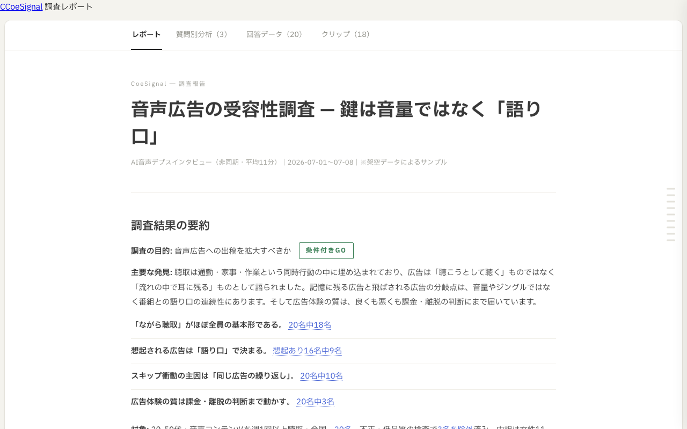
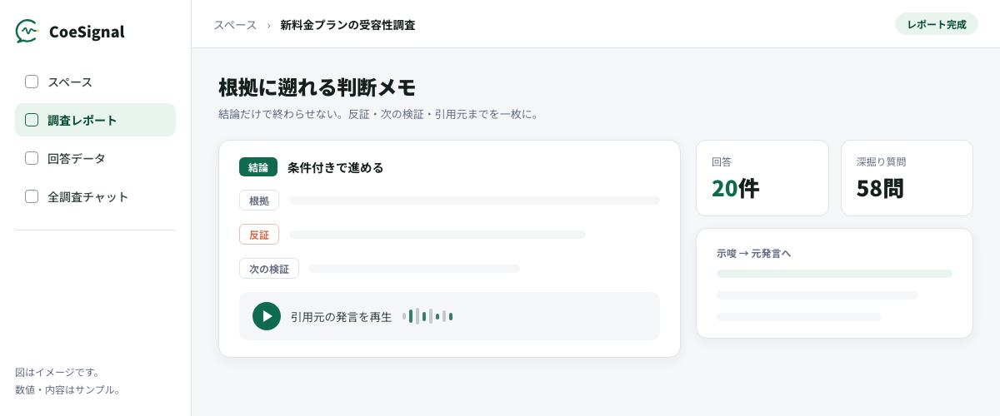

インタビュー10件で逐語録が1件数十ページになると、全件を読む前に報告会の日程が迫ることがあります。本記事では、生成AIに任せる下ごしらえと、人が担う解釈・判断を分けます。
公開済み実画面：CoeSignalサンプルレポート（2026年10月6日確認）

生成AIが速くする工程と人に残る判断
文字起こし・要約・テーマ抽出・横断比較・引用元の紐付けが速くなり、問いの設定と解釈は人に残ります。
インタビュー分析が重いのは、4つの手作業が積み重なるうえ、解釈が担当者に属人化しやすいからです。
- 逐語録化：録音をテキストに起こします。
- コーディング：発言に意味のラベルを付けます。
- 切片化：文脈ごとに発言を切り出します。
- 統合：カードを並べ替えて構造化します（KJ法などの統合作業）。
1時間のインタビューでも、逐語録は数十ページになります。5件、10件と重なると、全件を精読して比較すること自体が難しくなります。レポートが調査の数週間後になり、意思決定のタイミングを逃すこともあります。
どの発言を重く見るかは、担当者の経験と関心に依存します。同じ逐語録から、別の人が別の結論を導くことは珍しくありません。「なぜその示唆になったのか」を、後から第三者が検証しにくい点が、従来の構造的な弱点でした。
生成AIが速くするのは、分析の下ごしらえにあたる工程です。具体的には、文字起こしと一件ごとの要約です。複数インタビューを横断したテーマの抽出もあります。共通する論点と割れている論点の整理や、示唆と発言の紐付けまで、下書きが短時間で揃います。
問いの設定、下書きの解釈、解釈の意思決定への使い方は、人の仕事として残ります。AI要約には、ハルシネーション・少数意見の均し込み・確証バイアスという落とし穴があります。反証を残し、原文へ遡れる状態を保ち、音声を保存する調査では同意範囲内の原音声も確認できるようにし、人が最終確認する設計が前提です。
CoeSignalの判断メモを原文へ戻す
結論・反証・次の検証・引用元でできた判断メモを納品し、示唆から回答原文へ戻れるようにしています。音声は保存への同意がある調査だけで確認できます。
CoeSignal（株式会社TechWorkerが提供するAIインタビュープラットフォーム）は、AIが一人ずつ深掘りするインタビューを、回答者がURLを開いて声で答える形で実施します。設計・実査・分析・納品までを、一つの流れで扱います。
成果物は、「根拠に遡れる判断メモ」です。結論・反証・次の検証・引用元で構成され、示唆から回答全文へ戻れます。社外調査など音声保存への同意がある場合は原音声も確認できますが、社内調査では音声を文字化後に削除する運用です。AIの下書きを担当者が確認してから納品する運用も、本記事で述べる設計を実装したものです。
実際のレポート画面は、公開サンプルで確認できます。

図：根拠に遡れる判断メモの構造（図はイメージ・数値はサンプル）。結論・根拠・反証・次の検証と、引用元の発言再生が並ぶ。
公開サンプル調査「音声広告の受容性」（20名）から抽出された示唆には、すべて言及数と引用元が付いています。公開デモでは原文とサンプル音声へ遡れます。
- 「ながら聴取」がほぼ全員の基本形です（20名中18名）。
- 想起の決め手は「語り口」です（想起あり16名中9名）。
- スキップの主因は「同じ広告の繰り返し」です（20名中10名）。
- 広告体験が、課金・離脱の判断まで及んでいます（20名中3名）。
これは架空データによるデモです。言及数が付いているので、18名の共通項なのか、3名の少数シグナルなのかを確かめながら読めます。
反証と引用元を残す分析手順
小さく試し、反証と引用元を必須にし、人が原文と突き合わせてから、四段構成で報告します。
判断メモでは、結論の横に「次に何を確かめるか」を書きます。少数の発言を残すだけでは、採用した結論との関係が分かりません。反例によって結論を狭めたのか、追加調査へ回したのかを一行で示します。本文の20名のサンプルは架空データのデモで、実顧客の調査成果ではありません。
手順1：手元のデータで小さく試す
まず、利用ツールの学習利用と保管方針を確認します。個人を特定できる情報を処理し、社内規程に沿ってアクセス範囲を絞ったうえで、利用が認められた逐語録や自由回答を1テーマぶんだけAIに渡します。テーマ抽出と要約の下書きを作らせます。できた下書きは、原文と突き合わせます。
手順2：反証と引用元を必須項目にする
要約を頼むときは、「結論に合わない発言」と「各示唆の引用元」を必ず出力させます。原文に遡れない示唆は、採用しないと決めます。運用の設計は、次の3つです。
- 結論と一緒に反証を残させます。仮説に合わない発言や、割れている論点です。
- どの示唆も、引用元の発言から原文・原音声まで遡れる状態を保ちます。
- AIの出力は下書きと位置づけます。人が原文と突き合わせて最終確認してから、外に出します。
この3点が揃うと、AI要約は「速いが怪しいもの」から「速くて検証可能なもの」に変わります。
手順3：レポートを四段構成で書く
分析の出口はレポートです。発言の抜粋を並べただけの資料は、「で、どうする？」に答えられません。結論だけの資料は、「その発言は実際にあったの？」に答えられません。両方に耐える型が、次の四段構成です。
図：意思決定につながる判断メモの四段構成（※サンプル）。結論から書き始め、根拠・反証・次の検証で支える。
型の肝は、3と4です。反証を明記したレポートは、会議で反論が出たときに、「その論点は把握済みで、だからこの結論です」と返せます。次の検証まで書いてあれば、レポートは棚に眠らず、次の調査や施策の起点になります。
全体を貫く条件は、どの記述も引用と原音声に戻れることです。「その発言は実際にあったの？」と聞かれた瞬間に、発言そのものを示せるレポートは、社内の信頼を勝ち取ります。
チェックは1つで足ります。「このレポートの任意の一文について、元の発言をその場で示せるか」です。示せない一文は、削るか、仮説と明記します。
AI要約で起きる3つの失敗
ハルシネーション、少数意見の均し込み、確証バイアスの増幅の3つが、典型的な落とし穴です。
生成AIの要約は流暢です。流暢だからこそ、癖を先に押さえます。
- ハルシネーション。AIは、言っていないことをもっともらしく補って要約することがあります。要約単体では気づけません。元の発言と突き合わせられる形になっていないと、検証のしようがありません。
- 少数意見の均し込み。これは本記事が監査対象として置く運用上の失敗仮説です。要約だけでは少数意見が残ったか確認できません。結論を変え得る発言を別欄へ出し、原文と件数を人が確認します。
- 確証バイアスの増幅。「この仮説を裏付ける発言を探して」と頼めば、AIは従順に裏付けだけを集めます。都合のよい引用が並んだレポートは、会議では強く見えても、判断としては脆くなります。
少数意見が必ず最も価値あるとは限りません。ただし、結論の成立範囲を変える発言は、多数決で消さず、反証または次の検証として残します。
図：AI要約の「均し込み」が起きた要約と、反証を残した要約の対比（※架空の例です）。
分析が重いと、調査は「実施すること」が目的になりがちです。発話データが判断材料に変わらないまま、逐語録がフォルダに眠ります。これが一番もったいない失敗です。
分析前の品質監査は、何を残せばよいですか？
要約の精度だけを見ても足りません。実査から報告まで、次の六つを同じ監査記録へ残します。
- 不正回答：重複、所要時間、回答の整合性は機械判定で自動除外せず、人の再確認へ回します。採用・要確認・除外の理由と判定者を残し、除外前後で主要テーマが変わるかも比べます。
- 方式差：人とAIを比べるときは、同じ母集団から割り付け、質問文、順序、謝礼、端末条件をそろえます。回答量が増えただけでAIが優れるとは判定しません。
- 非回答：回答者だけで結論を作らず、招待数、未着手、途中離脱、完了を属性別に確認します。参加しなかった人の意見は、回答データからは推定できません。
- 試作品評価：感想より、直近の操作、つまずいた箇所、完了条件を記録します。発言と操作ログが食い違う場合は、両方を残します。
- 文字起こし：商品名、価格、数量、否定、引用候補を重点確認し、誤り率だけでなく判断を変える誤りを記録します。
- 要約監査：各主張に引用元を付け、反証と未確認事項を別欄へ置きます。原文へ戻れない主張は削るか、仮説と明記します。
この六つは、AI出力を信頼するための飾りではありません。どの回答を採用し、どの方式で集め、何を文字にし、どの引用から結論を作ったかを、後から別の担当者が追えるようにするための記録です。
工程別に自動化と人の確認を分ける
逐語録化から根拠の紐付けまでの下ごしらえは圧縮され、解釈と意思決定は人の仕事として残ります。
| 工程 | 従来の進め方 | 生成AIで変わること | 人に残る仕事 |
|---|---|---|---|
| 逐語録化 | 録音を聞きながら手で起こす | 自動文字起こしで下書きが揃う | 固有名詞・聞き取りの確認 |
| 要約・コーディング | 精読して意味のラベルを付ける | 要約とテーマの下書きを生成 | ラベルの妥当性を判断する |
| 横断比較 | 全件を読み比べて共通点を探す | 共通テーマと割れる論点を抽出 | どの論点を重く見るか決める |
| 根拠の紐付け | 引用探しに手間がかかり省略されがち | 示唆と発言の対応を保持できる | 引用が文脈通りかを確かめる |
| 解釈・意思決定 | 担当者の頭の中で完結 | —（AIの領域ではない） | 問いを立て、判断し、動く |
この分担が回ると、下ごしらえに費やしていた時間が圧縮されます。発言の解釈と打ち手の設計に、時間を回せるようになります。
よくある質問
文字起こしで止めると、読む・分類する・比べるという一番重い作業が、まるごと人に残ります。分析までAIを使うと、テーマ抽出、横断比較、示唆と発言の紐付けまで、下書きが揃った状態から始められます。人の仕事が、ゼロから読み解く作業から、AIの下書きを検証して仕上げる作業に変わります。
何件以上という基準はありません。数件でも、逐語録化や要約の下書きは速くなります。複数の対象者を横断して、共通するテーマと割れている論点を洗い出す使い方があります。人手で読み比べるのがつらい件数ほど効きます。全件を人が精読しきれるかを目安にして、しきれない規模になったら横断分析を組み込むのが現実的です。
発話データは個人の語りそのものなので、一般のテキスト以上に慎重に扱います。基本は3つです。利用するツールの学習利用の有無とデータ保管方針を先に確認します。個人を特定できる情報は、渡す前に処理します。社内の規程に沿って、アクセス範囲を絞ります。組織的に運用するなら、SSO（一度のログインで複数のサービスに入れる仕組み）・権限管理・監査ログ・データ管理を備えた環境も選べます。CoeSignalは、NDAや個別契約に対応します。
使えます。自由回答はインタビューより一件あたりの文脈が薄い一方、件数が多く人手で読み切れないという同じ課題を抱えています。テーマ抽出・横断比較・原文への紐付けという型は、そのまま適用できます。短い回答ほど、AIが文脈を補って解釈しがちです。示唆から原文に戻って確かめる運用は、インタビュー以上に大切です。
分析前に固定する監査記録
1テーマ分を試すときも、プロンプトだけを保存して終わりません。募集条件、取得方式、質問版、除外理由、文字起こしの修正、要約から原文への対応を一つの台帳へ残します。
報告書の各主張には、支持する引用、反証、未確認事項、次に確かめることを付けます。自動要約と人の修正を分け、どの版を会議で使ったかも記録します。
監査の合格条件は、報告書の任意の一文から元発話へ戻れることです。戻れない一文は削るか、仮説として扱います。